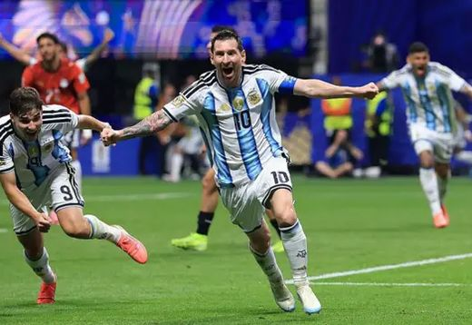
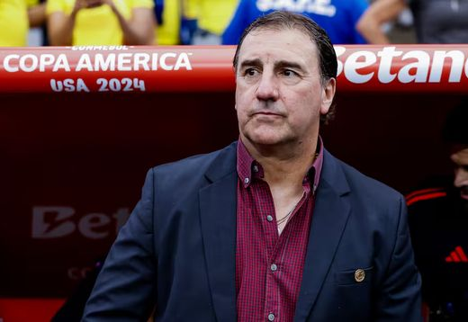
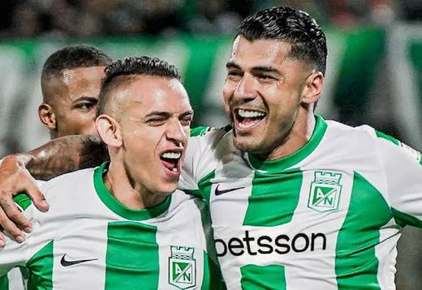

Juan Salvador@juansalvador · 2 h
Cuadrado en Barranquilla. Lo vamos a contar todo hoy en @habladeportes a las 10. Prepárense, que esto se pone bueno. 🦈 #Junior
482 1,9 mil 8,7 mil


| # | Equipo | PJ | DG | Pts | Forma |
|---|---|---|---|---|---|
| 1 | Junior | 20 | +17 | 42 | GGEGG |
| 2 | Nacional | 20 | +11 | 38 | GPGGE |
| 3 | Tolima | 20 | +8 | 35 | EGGPE |
| 4 | Millonarios | 20 | +6 | 33 | GEPGE |
| 5 | Medellín | 20 | +3 | 31 | PGGGG |
| 6 | América | 20 | +1 | 29 | EPEGP |
Datos de ejemplo para la propuesta. En producción: feed en vivo de Data Factory, actualizado sin intervención de la redacción.

Datos de ejemplo para la propuesta. Lo carga la redacción desde el panel del sitio.
Cuadrado en Barranquilla. Lo vamos a contar todo hoy en @habladeportes a las 10. Prepárense, que esto se pone bueno. 🦈 #Junior
Los penales no se explican, se sufren. Gracias a los que nos acompañaron anoche en el directo, fuimos más de 40 mil. 🙌
🔴 EN VIVO desde las 10:00 a.m. Final, Selección y mercado. Mira el programa completo en nuestro canal y escúchalo en habladeportes.co.
En producción: las publicaciones se incrustan desde las API/oEmbed de Instagram y X (o se cargan por la redacción), con carga diferida para no frenar la página.
Escucha el programa en vivo desde cualquier lugar o ponte al día con los episodios anteriores, cuando tú quieras.
¿Quién debe ser el titular en la final: Cuadrado o el extremo de la cantera?
Cada mañana, a las 6:00 a.m., el resumen de Habla Deportes: titulares, datos y el tema del programa.
Sin spam. Te das de baja cuando quieras.